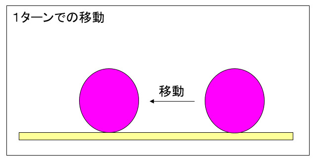
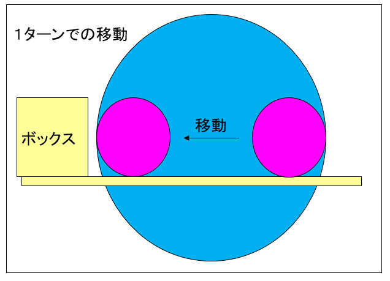
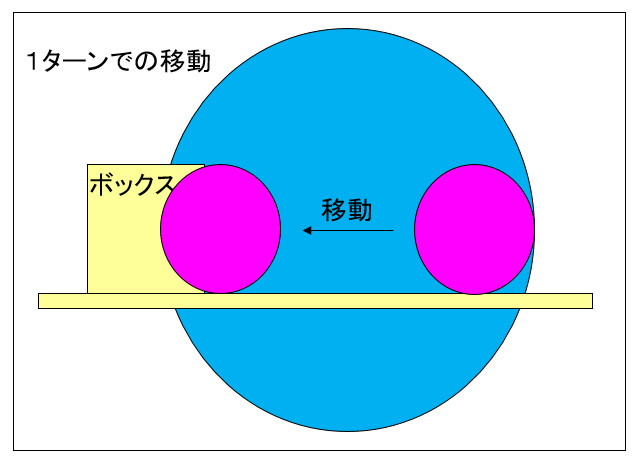
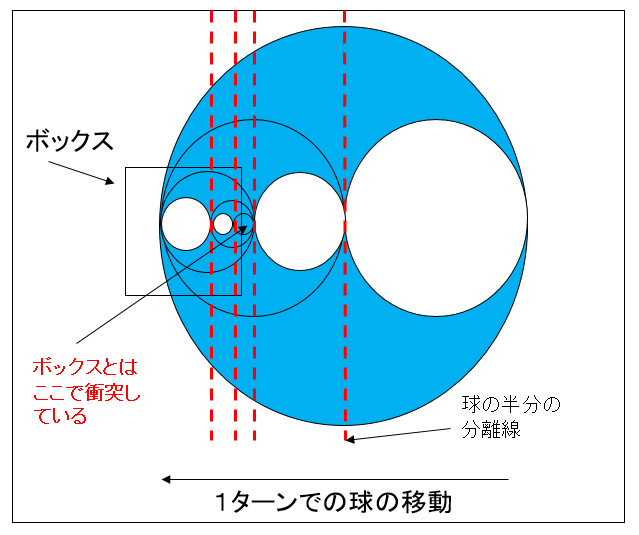
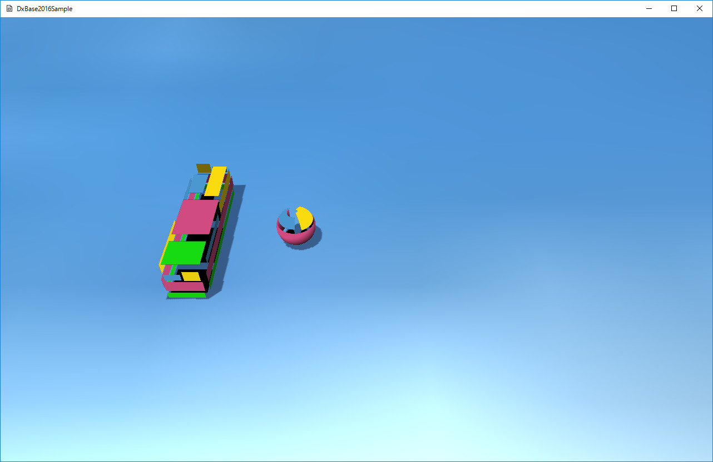

図6002a
これを、移動とは考えずに、移動範囲を全て網羅する境界ボリュームと考えたらどうなるでしょう？

図6002b
ブルーの球体が移動範囲を全て網羅する境界ボリュームです。このブルーの球体とボックスの衝突がなければ移動中の衝突はないということになります。

図6002c
移動距離を直径としたボリューム境界を作成することで、前回のターンから今回のターンの間のどのタイミングかで衝突しているのがわかります。では、どのタイミングで（例えば、0.005秒後など）衝突したかを得ることはできないでしょうか？

図6002d
この図では、まず、1ターン分の移動距離を直径とした球体を作成し、それとOBBの判定を行います。ここで衝突してなければ判定は終了です。衝突していれば、いまの球体を前半分と後半分を直径とした球体に分けそれぞれ判定します。もし後ろ半分で衝突していれば、さらに半分に分けて衝突判定します。

図6002e
ここで上記の再帰処理している関数が、MoveSphere::RecTestSphereObb()関数です。
bool MoveSphere::RecTestSphereObb(const SPHERE& SrcSp, const Vector3& SrcVelocity,
const OBB& DestObb,
float StartTime, float EndTime, float& HitTime){
const float EPSILON = 0.002f;
SPHERE SrcSp2;
float mid = (StartTime + EndTime) * 0.5f;
SrcSp2.m_Center = SrcSp.m_Center + SrcVelocity * mid;
SrcSp2.m_Radius = (mid - StartTime) * SrcVelocity.Length() + SrcSp.m_Radius;
Vector3 RetVec;
if (!HitTest::SPHERE_OBB(SrcSp2, DestObb, RetVec)){
return false;
}
if (EndTime - StartTime < EPSILON){
HitTime = StartTime;
return true;
}
if (RecTestSphereObb(SrcSp, SrcVelocity, DestObb, StartTime, mid, HitTime)){
return true;
}
return RecTestSphereObb(SrcSp, SrcVelocity, DestObb, mid, EndTime, HitTime);
}
void MoveSphere::OnUpdate(){
//行き過ぎた場合の対応
if (m_Posision.x > m_StartPosision.x){
m_Posision = m_StartPosision;
//速度を速くする
m_Velocity.x = -50.0f;
}
float ElapsedTime = App::GetApp()->GetElapsedTime();
//Boxを取得
auto BoxPtr = GetStage()->GetSharedGameObject<Box>(L"Box");
auto BoxMat = BoxPtr->GetComponent<TransformMatrix>()->GetWorldMatrix();
OBB BoxObb(Vector3(1.0f, 1.0f, 1.0f), BoxMat);
SPHERE Sp(m_Posision, m_Scale.x / 2.0f);
float HitTime;
bool Hit = false;
//衝突判定
//実際に動かす前に判定する
if (RecTestSphereObb(Sp, m_Velocity, BoxObb, 0, ElapsedTime, HitTime)){
//衝突した
ElapsedTime = HitTime;
Hit = true;
}
//判定後に動かす
auto Span = m_Velocity * ElapsedTime;
m_Posision += Span;
if (Hit){
//衝突してたら反転移動（ゆっくり）
m_Velocity.x = 1.0f;
}
auto PtrTransformMatrix = GetComponent<TransformMatrix>();
Matrix4X4 mat;
mat.DefTransformation(
m_Scale,
Vector3(0.0f, 0.0f, 0.0f),
m_Posision
);
PtrTransformMatrix->SetWorldMatrix(mat);
}